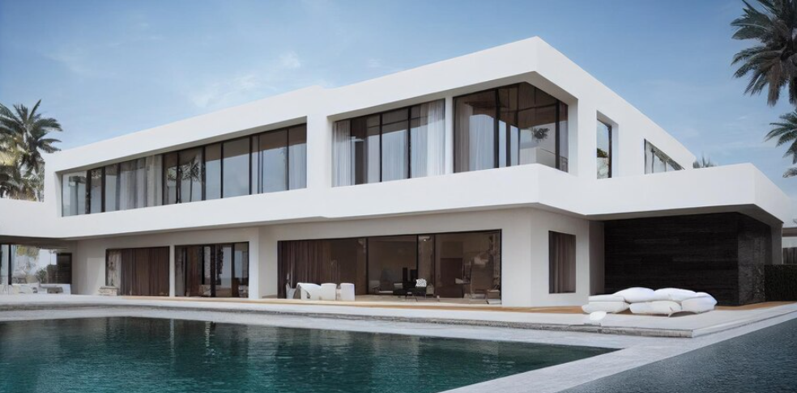
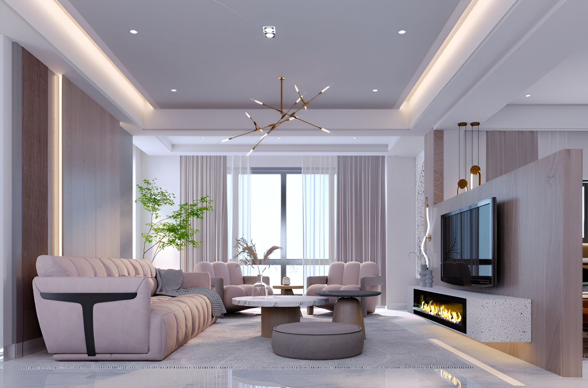
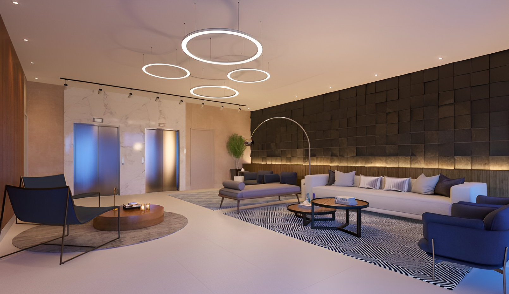
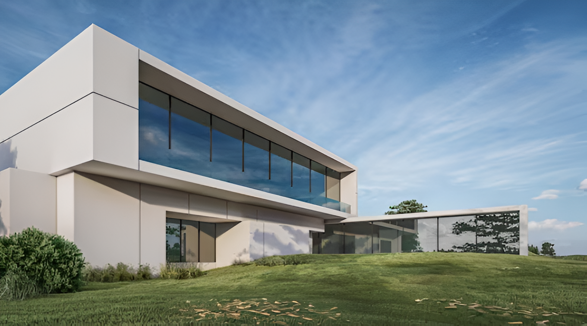

Our expert team at Architex specializes in creating innovative and functional architectural designs tailored to meet the unique needs and aspirations of our clients. With a keen eye for detail and a passion for creativity, we approach each project with a fresh perspective, striving to deliver designs that not only meet aesthetic expectations but also excel in functionality and sustainability.
Architex specializes in transforming spaces with innovative renovation and remodeling solutions. Our team revitalizes existing structures, breathing new life into residential, commercial, and institutional properties. From minor upgrades to complete overhauls, we blend modern design trends with client preferences, enhancing functionality and aesthetics while preserving the essence of the original space. With a focus on efficiency and quality craftsmanship, we deliver renovations that elevate and inspire
Architex brings spaces to life through thoughtful and creative interior design solutions. Our expert team crafts personalized environments that harmonize functionality with style, ensuring every detail reflects our clients' unique vision and lifestyle. From space planning to furniture selection, we meticulously curate each element to optimize flow, maximize comfort, and evoke a sense of harmony and sophistication. Whether residential, commercial, or institutional, our commitment to excellence transforms spaces into captivating and inviting settings.
At Architex, we understand the importance of selecting the right materials to enhance the beauty, durability, and functionality of a space. Our meticulous approach to material selection involves a careful consideration of factors such as aesthetics, performance, sustainability, and budget. Leveraging our expertise and industry knowledge, we guide our clients through a curated selection process , offering a wide range of high-quality materials tailored to their specific needs and preferences. From flooring and finishes to fixtures and fittings, we ensure every material chosen contributes to the overall success of the design, creating spaces that are both visually stunning and built to last
Architex illuminates spaces with precision and creativity through our specialized lighting design services. We recognize that lighting plays a crucial role in setting the mood, enhancing functionality, and highlighting architectural features. With a keen eye for detail and a deep understanding of lighting principles, our expert designers collaborate closely with clients to develop tailored lighting solutions that transform their spaces. From ambient and task lighting to accent and decorative fixtures, we carefully select and position each element to achieve the desired atmosphere and aesthetic impact.
At Architex, we understand the importance of selecting the right materials to enhance the beauty, durability, and functionality of a space. Our meticulous approach to material selection involves a careful consideration of factors such as aesthetics, performance, sustainability, and budget. Leveraging our expertise and industry knowledge, we guide our clients through a curated selection process , offering a wide range of high-quality materials tailored to their specific needs and preferences. From flooring and finishes to fixtures and fittings, we ensure every material chosen contributes to the overall success of the design, creating spaces that are both visually stunning and built to last
Architex harnesses the power of cutting-edge technology to bring designs to life with stunning realism and clarity. Through our advanced 3D visualization services, clients can explore and experience their projects in immersive detail before construction begins. Our skilled team utilizes state-of-the-art software to create lifelike renderings and virtual walkthroughs, allowing clients to visualize every aspect of their design from different perspectives. This interactive approach not only facilitates better decision-making and communication but also ensures that the final result meets or exceeds expectations.
